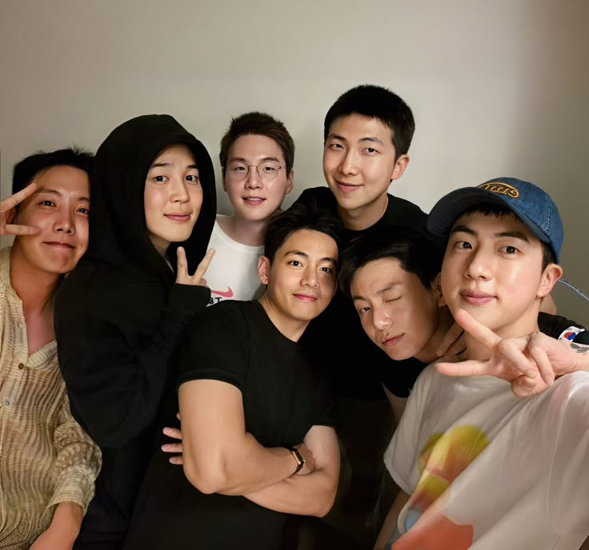

Boas-vindas a
 Quero conhecer!BTS: Do Sonho à Consagração Mundial
BTS (Bangtan Sonyeondan ou Beyond The Scene) é um grupo sul-coreano formado pela BigHit Entertainment (atual HYBE) em 2013. Inicialmente voltado para o hip-hop, o grupo evoluiu musicalmente, misturando diversos gêneros e abordando temas profundos, como saúde mental, amor-próprio e desafios da juventude. O grupo é composto por sete membros: RM, Jin, SUGA, J-Hope, Jimin, V e Jungkook. Desde o início, eles se destacaram por suas letras introspectivas e por uma forte conexão com os fãs, construindo uma trajetória marcada por crescimento e superação. Feitos e Impacto Global BTS quebrou recordes e conquistou o mundo, tornando-se um dos maiores nomes da indústria musical. Alguns de seus marcos incluem: Primeiro grupo coreano a se apresentar no Billboard Music Awards (BBMAs) e ganhar prêmios como Top Social artistas (por anos consecutivos) e Top Duo/Group. Álbuns no topo da Billboard 200, começando com Love Yourself: Tear (2018). Recordes de streams e views, como o clipe de Dynamite, que bateu 101 milhões de visualizações no YouTube em 24 horas. Discurso na ONU e apoio a causas sociais, promovendo mensagens sobre amor-próprio e juventude através da campanha Love Myself, em parceria com a UNICEF. Indicados ao Grammy, quebrando barreiras para artistas asiáticos na premiação. Atualmente, o grupo está em um período de pausa para o serviço militar obrigatório, mas seus membros continuam lançando trabalhos solos e fortalecendo o legado do BTS.
O ARMY: O Fandom que Move Montanhas
O fandom oficial do BTS se chama ARMY (Adorable Representative M.C. for Youth), nome anunciado em 2013. A ideia por trás do nome é que os fãs são como um "exército" que protege e apoia o BTS, além de representar uma geração de jovens unidos pelo grupo. O ARMY é famoso por sua dedicação e pelas "loucuras" que faz pelo BTS, como: Quebrar recordes de streaming em plataformas como YouTube e Spotify. Comprar publicidade para os membros em telões de Times Square, ônibus, metrôs e até na Lua! Organizar doações massivas, arrecadando milhões para causas sociais em nome do BTS. Apoiar o grupo incondicionalmente, desde defender os membros online até viajar para outros países para vê-los. O ARMY se tornou um dos fandoms mais poderosos da indústria do entretenimento, influenciando até premiações e eventos globais
A Trajetória do BTS: De Sonhos a Lendas
O BTS começou sua carreira com um conceito rebelde e crítico, abordando temas como pressões sociais e dificuldades da juventude. Seu primeiro álbum, 2 Cool 4 Skool (2013), foi o primeiro passo de uma jornada árdua. Nos primeiros anos, o grupo enfrentou dificuldades financeiras e falta de reconhecimento na Coreia do Sul. Porém, o crescimento internacional veio com o álbum The Most Beautiful Moment in Life (2015-2016), que conquistou fãs pelo mundo. A partir de 2017, com a trilogia Love Yourself, o BTS se tornou um fenômeno global. Canções como DNA, Fake Love e IDOL ajudaram a consolidar sua imagem e quebrar barreiras culturais. Em 2020, Dynamite levou o grupo ao topo da Billboard Hot 100, algo inédito para um grupo sul-coreano. Desde então, BTS continua influenciando a cultura pop, deixando um legado que vai além da música. Seu impacto no K-pop e no cenário global é inegável, e, mesmo em hiato, eles seguem sendo referência mundia
BTS E A ONU: UM DISCURSO QUE MARCOU GERAÇÕES
A participação do BTS na Organização das Nações Unidas (ONU) foi um dos momentos mais icônicos da história do grupo. Tudo começou em 2018, quando eles discursaram na Assembleia Geral da ONU, em parceria com a UNICEF, promovendo a campanha Love Myself, que incentivava o amor-próprio e a saúde mental. Naquele dia, RM, como líder, fez um discurso emocionante, incentivando os jovens a "falarem suas próprias histórias" e a não terem medo de serem quem são. Aquilo foi um marco. Não era só um grupo de K-pop em um palco – era um movimento global, mostrando que o BTS estava muito além da música. Depois disso, o grupo voltou à ONU em 2021, agora como enviados especiais da Coreia do Sul. Eles falaram sobre a importância da juventude no mundo pós-pandemia, além de levarem uma mensagem de esperança com a apresentação de Permission to Dance dentro da própria sede da ONU. Se alguém ainda duvidava do impacto do BTS, esse foi o momento que calou qualquer crítica